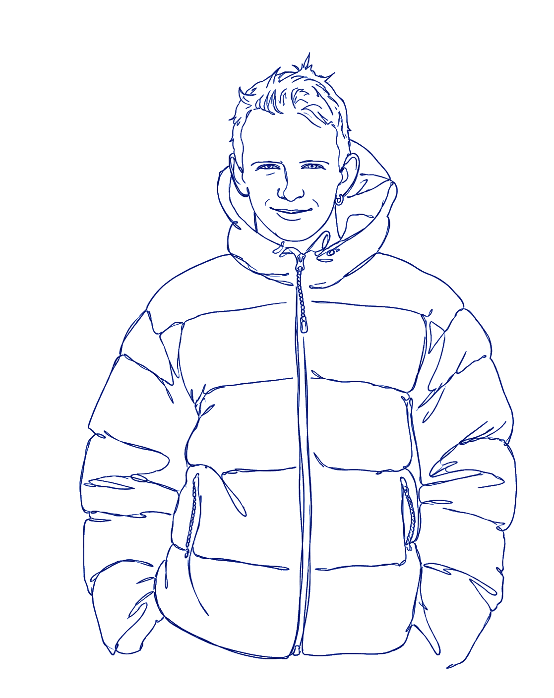
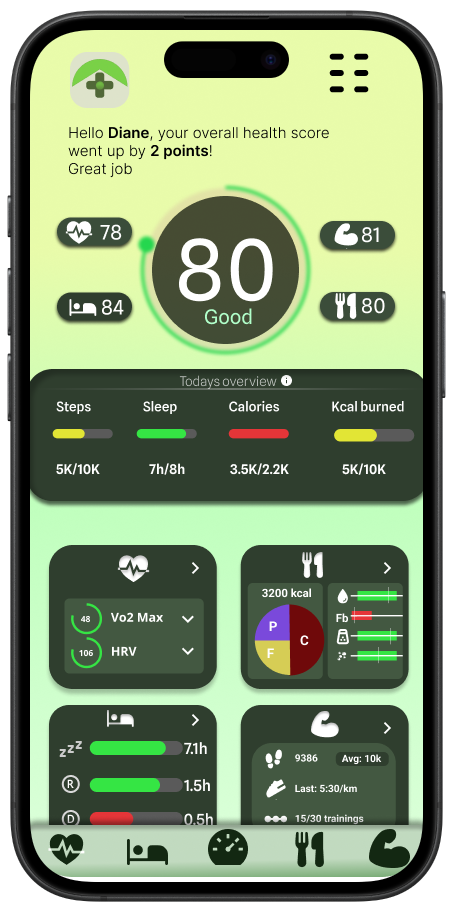
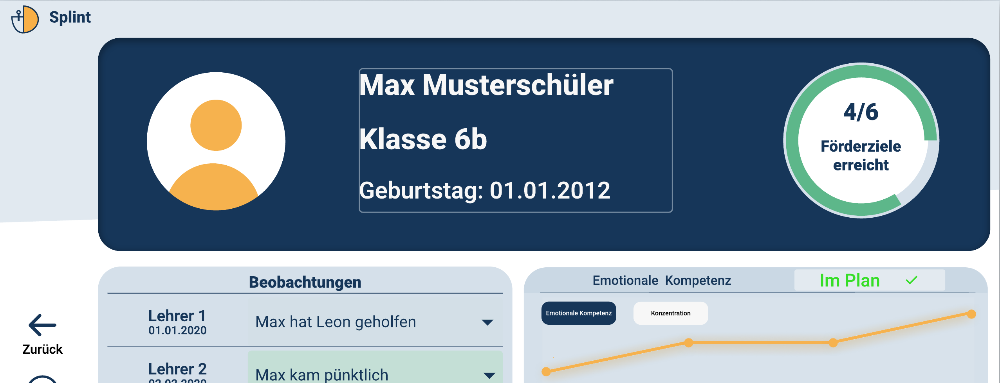
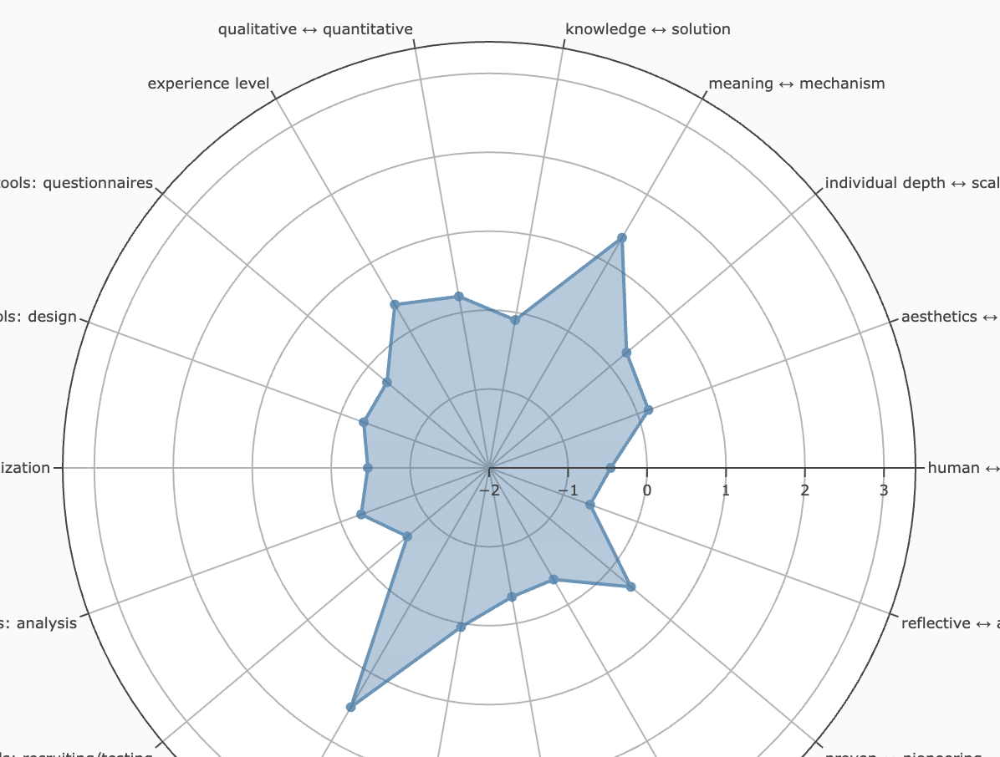

Ich bin ein kreativer Kopf aus Hamburg, der sich für alles rund um folgende Themen begeistert:

Komplexe Gesundheitsdaten in einem verspielten Score vereinfacht.
Mehr erfahren
Ein Förderplanungs-Dashboard, das vier Metriken - und den Fortschritt einer Schülerin - auf einen Bildschirm bringt.
Mehr erfahren
1.300 echte UX-Researcher, 18 Dimensionen, fünf Typen - und wo ich quantitativ hineinpasse.
Mehr erfahren
Kann GPT-4 Motivation zwischen den Zeilen lesen? Eine bewertete Pipeline stellt sich dem Test gegen eine validierte psychometrische Baseline.
Mehr erfahren